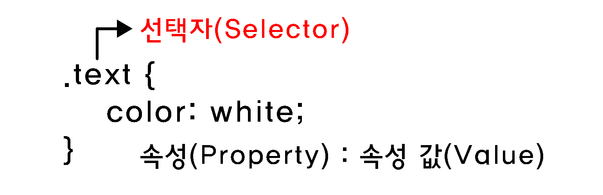
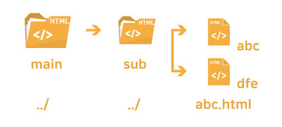

CSS
CSS(Cascading Style Sheets)는 HTML로 작성된 문서를 쓰기 위한 스타일 시트 언어이다.
- HTML은 문서의 골격을 이룬다면, CSS는 골격에 맞는 디자인 작업 언어라고 생각하면 된다.
CSS 선택자
특정 요소들을 선택하여 스타일을 적용할 수 있다.
- 이런 문장들을 한군데에 모으면 스타일 시트(Style Sheet)를 이루게 되어, 많은 수의 스타일 규칙들을 관리하기 쉬워진다.
- 선택자의 종류는 전체 선택자, 태그 선택자, 클래스 선택자 등 다양하다.
기본 선택자
| 종류 | 예시 | 이름 |
|---|---|---|
| 태그 선택자 | p {color:#fff;} | p 태그를 선택하여 글씨 색을 하얀색으로 변경합니다. |
| 클래스 선택자 | .class {color:#fff;} | class 클래스를 선택하여 글씨 색을 하얀색으로 변경합니다. |
| 아이디 선택자 | #id {color:#fff;} | id 아이드를 선택하여 글씨 색을 하얀색으로 변경합니다. |
| 그룹 선택자 | p, div {color:#fff;} | p 태그와 div 태그를 선택하여 글씨 색을 하얀색으로 변경합니다. |
| 전체 선택자 | * {color:#fff;} | 전체 태그를 선택하여 글씨 색을 하얀색으로 변경합니다. |
- id 선택자
- 하나의 태그만 식별하기 위한 선택자이다.
- 하나의 태그에서 하나만 사용할 수 있다.
"#"으로 표시해준다.
- class 선택자
- 여러개의 태그를 식별하기 위한 선택자이다.
- 하나의 태그에서 여러개를 사용할 수 있다.
"."으로 표시해준다.
계층 선택자
| 종류 | 예시 | 이름 |
|---|---|---|
| 하위 선택자(Descendant Selector) | div p {color:#fff;} | div 태그의 모든 자식 중 p 태그를 모두 선택하여 글씨 색을 하얀색으로 변경합니다. |
| 자식 선택자(Child Selector) | div > p {color:#fff;} | div 태그의 모든 자식 중 첫번째 자식 p 태그를 선택하여 글씨 색을 하얀색으로 변경합니다. |
| 형제 선택자(sibling Selector) | div ~ p {color:#fff;} | div 태그의 인접한 형제 p 태그를 모두 선택하여 글씨 색을 하얀색으로 변경합니다. |
| 인접 형제 선택자(Adjacent Sibling Selector) | div + p {color:#fff;} | div 태그의 인접한 형제 첫번째 p 태그를 선택하여 글씨 색을 하얀색으로 변경합니다. |
속성 선택자
| 종류 | 예시 | 이름 |
|---|---|---|
| [name] | a[href] | a 태그 속성 중에 href가 있으면 선택합니다. |
| [name="value"] | a[href="#header"] | a 태그 href 속성의 값이 '#header'이면 선택합니다. |
| [name~="value"] | a[href~="web"] | a 태그 href 속성의 값이 'web'을 포함한 요소를 선택합니다. |
| [name|="value"] | a[href|="web"] | a 태그 href 속성의 값이 'web'이거나 'web'으로 시작하는 요소를 선택합니다. |
| [name^="value"] | a[href^="web"] | a 태그 href 속성의 값이 'web'으로 시작하는 태그를 선택합니다. |
| [name*="value"] | a[href*="web"] | a 태그 href 속성의 값이 'web'이 포함되어 있는 태그를 선택합니다. |
| [name$="value"] | a[href$="com"] | a 태그 href 속성의 값이 'com'으로 끝나는 태그를 선택합니다. |
가상 요소
| 종류 | 예시 | 이름 |
|---|---|---|
| ::first-line | p:first-line {color:#fff;} | 문단의 첫 줄에 컬러색을 하얀색으로 변경합니다. |
| ::first-letter | p:first-letter {color:#fff;} | 문단의 첫 글자에 컬러색을 하얀색으로 변경합니다. |
| ::before | p:before {content:"시작"} | 문단 시작 부분에 '시작'이라는 요소를 추가합니다. |
| ::after | p:after {content:"끝"} | 문단 끝 부분에 '끝'이라는 요소를 추가합니다. |
| ::selection | p:selection {color:#fff;} | 드래그로 선택하였을 경우 글씨 색을 하얀색으로 변경합니다. |
가상 클래스
| 종류 | 예시 | 이름 |
|---|---|---|
| :first-child | li:first-line {color:#fff;} | li 자식 요소 중 첫 번째 자식 요소에게 컬러를 하얀색으로 변경합니다. |
| :last-child | li:last-line {color:#fff;} | li 자식 요소 중 마지막 번째 자식 요소에게 컬러를 하얀색으로 변경합니다. |
| :first-of-type | p:first-of-type {color:#fff;} | 자식 요소 중 p 태그 첫 번째 자식 요소에게 컬러를 하얀색으로 변경합니다. |
| :last-of-type | p:last-of-type {color:#fff;} | 자식 요소 중 p 태그 마지막 번째 자식 요소에게 컬러를 하얀색으로 변경합니다. |
| :nth-child() | li:nth-child(2) {color:#fff;} | li 자식 요소 중 2번째 자식 요소에게 컬러를 하얀색으로 변경합니다. |
| :nth-last-child() | li:nth-last-child(2) {color:#fff;} | li 자식 요소 중 뒤에서 2번째 자식 요소에게 컬러를 하얀색으로 변경합니다. |
| :nth-of-type() | p:nth-of-type(2) {color:#fff;} | 자식 요소 중 p 태그 2번째 자식 요소에게 컬러를 하얀색으로 변경합니다. |
| :nth-last-of-type() | p:nth-last-of-type(2) {color:#fff;} | 자식 요소 중 p 태그 뒤에서 2번째 자식 요소에게 컬러를 하얀색으로 변경합니다. |
| :only-child | :only-child {color:#fff;} | 자식 요소 중 유일한 태그 자식 요소에게 컬러를 하얀색으로 변경합니다. |
| :only-of-type | p:only-of-type {color:#fff;} | 자식 요소 중 유일한 p 태그 자식 요소에게 컬러를 하얀색으로 변경합니다. |
| :not() | li:not(:nth-child(2)) {color:#fff;} | li 자식 요소 중 2번째 자식 요소를 제외하고 컬러를 하얀색으로 변경합니다. |
| :root | :root {color:#fff;} | 기본 루트 요소의 컬러를 하얀색으로 변경합니다. |
| :empty | :empty {color:#fff;} | 컨텐츠 요소가 없는 요소의 컬러를 하얀색으로 변경합니다. |
링크 가상 클래스
| 종류 | 예시 | 이름 |
|---|---|---|
| :link | a:link {color:#fff;} | 방문하지 않는 링크의 글씨 색을 하얀색으로 설정합니다. |
| :visited | a:visited {color:#fff;} | 방문한 링크의 글씨 색을 하얀색으로 설정합니다. |
| :hover | a:hover {color:#fff;} | 링크 위에 마우스를 올려 놓았을 경우 글씨 색을 하얀색으로 설정합니다. |
| :active | a:active {color:#fff;} | 링크가 활성화되었을 경우 글씨 색을 하얀색으로 변경합니다. |
CSS 색상
RGB 모드
RGB 모드는 빛의 삼원색인 '빨강(Red)', '초록(Green)', '파랑(Blue)'을 섞어 색을 만든다. 색을 섞을수록 점점 밝아지므로 '가산 혼합'이라 부른다. 모니터 화면용 작업(프레젠테이션, 웹디자인 등)에서 기본적으로 사용하는 색상 모드이다.
CMYK 모드
CMYK 모드는 '시안(Cyan)', '마젠타(Magenta)', '노랑(Yellow)', '검정(Black)'의 원색을 섞어서 색상을 만든다. 물감처럼 색을 섞을수록 점점 어두워지므로 '감산 혼합'이라 부른다. 출력용 이미지를 작업할때는 CMYK 색상 모드에서 작업해야 한다.
16진수 표기법
웹 문서에서 색상을 표현하는 방법은 16진수로 표현하는 방법이다. 두자리씩 묶어서 #RRGGBB 형식으로 표현하며, RR은 빨간색, GG는 초록색, BB는 파란색을 의미한다. 각 색상이 하나도 섞이지 않았음은 00부터 가득 섞였으면 FF까지 사용할 수 있다.
색상이름 표기법
색상 이름을 이용하여 색을 표현할 수 있다. 가장 기본적인 16가지를 포함하여 216가지의 색상 이름 표기법이 있다.
RGB와 RGBA 표기법
웹 문서에서 색상을 표현하는 RGB(255,255,255)는 십진수를 이용하여 표현한다. 색이 하나도 섞이지 않았을 때에는 0으로, 가득 섞였을 때에는 255로 표현한다. 숫자는 색상의 양을 나타내고 a는 투명도(Alpha)를 나타낸다. 투명도 0과 1사이로 표현한다.
HSL와 HSLA 표기법
웹 문서에서 색상을 표현하는 HSL은 색상(Hue), 채도(Saturation), 밝기(Light)를 나타낸다. 색상은 둥글게 배치한 색상환으로 표시하고 0도와 360도에는 빨간색, 120도에는 초록색, 240도에는 파란색이 배치된다. 채도가 0%이면 회색톤, 100%이면 순색으로 표시된다. 밝기는 0%에서는 가장 어둡고, 100%에서는 가장 밝다.
CSS 선언
HTML 문서에 스타일을 선언하는 방법은 3가지가 있다.
- 내부 스타일(Internal Style Sheet) : head 태그 안에 선언하는 방법
- 외부 스타일(External Style Sheet) : 외부 파일로 연결하는 방법
- 인라인 스타일(Inline Style Sheet) : 태그에 직접 연결하는 방법
<!DOCTYPE html>
<html lang="en">
<head>
<meta charset="UTF-8">
<title>Document</title>
<!-- 내부 스타일 -->
<style>
h1 {color: #fff;}
</style>
<!-- 외부 스타일 -->
<link rel="stylesheet" href="경로">
</head>
<body>
<!-- 인라인 스타일 -->
<h1 style="color: #fff"></h1>
</body>
</html>
float으로 인한 깨짐 현상
float을 쓰게되면 영역의 높이 값이 0으로 줄어들기 때문에 영역을 유지하는 방법이 필요하다.
- 깨지는 영역에 똑같이
float:left를 사용한다.
(모든 영역에 float을 사용하게 되고, 레이아웃이 복잡해지면 정확히 어디가 깨지는지를 알 수 없다.) - float의 성질을 차단하는
clear:both를 사용한다. (마찬가지로 레이아웃이 복잡해지면 어디가 깨지는지를 알 수 없다.)
float을 사용한 부모 박스 영역에overfloat: hidden을 사용한다.- 가상요소
clearfix만들어서 영역 깨짐 현상을 막아준다.
상대주소/절대주소
상대주소(상대경로) : link 외부스타일
절대주소(절대경로) : 어떠한 웹페이지나 파일이 가지고 있는 고유한 경로를 말한다.
- 상대주소 : 상대경로를 풀어서 보면 '현재 위치한 곳을 기준'으로 해서 '그곳의 위치'이다. 현재 내파일 기준으로 작업하는것을 말한다. 
- 절대주소 : ex)http://www.google.com, C:\users\document\untitled.jpg
이미지 표현 방법
웹 문서에 이미지를 표현하는 방법은 img 태그와 background를 통해 설정할 수 있다.
- img 태그를 표현하는 방법 : 이미지에 의미가 있는 경우(로고, 배너)
- background 태그를 표현하는 방법 : 이미지에 의미가 없는 경우(배경 장식)
img 태그로 이미지 표현하기(대체문자 표현 O)


background 속성으로 이미지 표현하기(대체문자 표현 X)
이미지 스프라이트를 이용한 이미지 표현(대체문자 표현 X)
이미지 스프라이트
아이콘 또는 장식을 위한 이미지 요소들은 스프라이트 기법을 활용하여 파일의 사이즈를 최소화하고 효율성을 높일 수 있다.
- 여러번의 서버 요청을 한번으로 줄일 수 있다.
- 이미지 수정이나 관리가 간편하다.
- 웹 접근성을 준수하기 위해서는 IR 효과를 설정해야 한다.
IR 효과
IR(Image Replacement)기법은 이미지 대체 텍스트를 제공하기 위한 CSS 기법으로 다양한 기법을 사용하여 이미지 대체 텍스트를 제공할 수 있다.
Phark Method
의미 있는 이미지의 대체 텍스트를 제공하는 경우 : 이미지로 대체할 엘리먼트에 배경이미지를 설정하고 글자는 text-indent를 이용하여 화면 바깥으로 빼내어 보이지 않게 하는 방법
PWA IR
의미 있는 이미지의 대체 텍스트로 이미지를 off시에도 대체 텍스트를 보여주고자 할 때 : 이미지로 대체할 엘리먼트에 배경이미지를 설정하고 글자는 span태그로 감싼 후 z-index: -1을 이용하여 화면에 안보이게 처리하는 방법
Screen Out
대체 텍스트가 아닌 접근성을 위한 숨김 텍스트를 제공할 때 사용한다.
이미지 타입
프로젝트 종류에 따라 여러가지 이미지 타입을 사용할 수 있다.
| 종류 | PC Web | Mobile Web | Mobile App | 투명효과 | 용량 | 애니메이션 |
|---|---|---|---|---|---|---|
| GIF | O | O | X | △ | 저 | O |
| JPG | O | O | X | X | 중 | X |
| PNG-8 | X | O | △ | △ | 저 | X |
| PNG-24 | △ | O | O | O | 고 | X |
| SVG | O | O | O | O | 저 | O |
- GIF : 이미지를 저장해도 데이터가 손실 되지 않는 무손실 압축을 사용한다. 파일 사이즈는 BMP보다 적은데, 좋은 압축 알고리즘을 사용하기 때문이다. 하지만 Indexed color 속성을 가지고 있어서 최대 256가지의 컬러로만 저장 할 수 있다.
- JPG(JPEG) : 인간의 눈으로 확인 할 수 없는 정보를 제거하는 방법으로 디테일한 사진 이미지를 가능한한 작게 만들어 놓은 압축된 디자인 파일이다. 색이 많이 들어가거나 화려한 이미지는 JPG로 표현한다.
- PNG-8 :
- PNG-24 : JPEG처럼 수천가지의 컬러를 가지면서 무손실 압축인 훌륭한 포맷이다.
- SVG :
컨텐츠 요소를 보이지 않게 하는 법
컨텐츠 요소를 보이지 않게 하는 방법은 display, opacity, visibility 등이 있다.
| 종류 | 반대 | 영역 | 애니메이션 |
|---|---|---|---|
display: none; |
display: block; |
영역 사라짐 | X |
visivility: hidden; |
visivility: visible; |
영역 유지 | X |
opacity: 0; |
opacity: 1; |
영역 유지 | O |
컨텐츠 요소를 가운데 오게 하는 법
반응형을 작업할 때 어떤 요소를 가운데 오게 하는 방법은 상당히 중요하고 방법도 여러가지가 있다.
- 가장 기본적인 방법이지만 이 방법은 한 줄(요소)일 경우에서만 해당이 된다.
- 부모요소(인라인구조) : text-align: center; line-height: (height값과 동일하게)
- 요소(블록구조) : margin: 0 auto; line-height: (height값과 동일하게)
- 요소의 성질을 table로 변환시켜서 가운데 정렬을 하는 방법이지만 table자체를 레이아웃에 많이 사용하지 않기 때문에 잘 쓰지 않는 방법이다.
- 부모요소 : display: table;
- 자식요소 : display: table-cell, text-align: center; vertical-align: middle;
- 절대 요소를 이용한 가운데 정렬방법이며, 제일 흔하게 쓰이지만 단점은 영역이 없어지는 것이 단점이어서 반응형을 할 때 사용하기 불편한 점이 있다.
- 부모요소 : position: relative;
- 자식요소 : position: absolute; top: 50%; left: 50%; margin-top:-(자식 요소 높이값의 반); margin-left:-(자식 요소 가로값의 반);
- 만약 자식요소의 가로값과 세로 값을 모르고 유동적인 경우에 절대 요소를 사용하여 가운데로 오는 정렬방법이다.
- 부모요소 : position: relative;
- 자식요소 : position: absolute; top: 50%; left: 50%; transform: translate(-50%, -50%);
- 절대 요소를 이용한 가운데 정렬 방법이지만 흔하게 쓰이지는 않는다.
- 부모요소 : position: relative;
- 자식요소 : position: absolute; top: 0; left: 0; bottom: 0; right: 0; margin: auto;
미디어 쿼리
미디어 쿼리는 화면(screen), 티비(tv), 프린터(print)와 같은 미디어 타입(media type)과 적어도 하나 이상의 표현식(expression)으로 구성된다.
- 표현식은 width, height, color와 같은 미디어 특성(media feature)들을 이용하여 그 특성들의 상태에 따라 다른 스타일 시트를 적용할 수 있다.
- 미디어 쿼리는 CSS3에 포함되어 있으며, 컨텐츠의 변경없이 주로 화면의 크기에 따라 스타일 시트를 달리하여 적절한 모양을 보여줄 수 있다.
- 미디어 쿼리는 두 가지 방법으로 사용할 수 있다.
- <link>요소에 사용하여 특성이 조건에 맞을때 css 파일을 불러온다.
- 스타일 시트내에서 @media 를 사용한다.
- media속성의 "screen and (max-width: 768px)"의 의미는 미디어 타입이 스크린이고, 화면의 최대 너비가 768px로 지정하는 것이다. 그러므로 화면의 너비 768px 이하 일때가 적용된다.
margin
margin 속성은 요소의 바깥쪽 여백을 설정한다.
margin-top: 10px;요소의 위쪽 바깥의 여백을 설정margin-right: 11px;요소의 오른쪽 바깥의 여백을 설정margin-bottom: 12px;요소의 아래쪽 바깥의 여백을 설정margin-left: 13px;요소의 왼쪽 바깥의 여백을 설정margin: 10px 11px 12px 13px;요소의 위쪽/오른쪽/아래쪽/왼쪽(시계방향으로) 바깥의 여백을 설정margin: 10px 11px 12px;요소의 위쪽(10px),왼쪽/오른쪽(11px),아래쪽(12px) 바깥의 여백을 설정margin: 10px 11px;요소의 위쪽/아래쪽(10px),왼쪽/오른쪽(11px) 바깥의 여백을 설정margin: 10px;요소의 위쪽/오른쪽/아래쪽/왼쪽(10px) 바깥의 여백을 설정margin: auto;자동값 또는 기본값 또는 초기값을 의미margin: 0 auto;블록 구조를 가운데 정렬할 때 사용
padding
padding 속성은 요소의 안쪽 여백을 설정한다.
padding-top: 10px;요소의 위쪽 안의 여백을 설정padding-right: 11px;요소의 오른쪽 안의 여백을 설정padding-bottom: 12px;요소의 아래쪽 안의 여백을 설정padding-left: 13px;요소의 왼쪽 안의 여백을 설정padding: 10px 11px 12px 13px;요소의 위쪽/오른쪽/아래쪽/왼쪽(시계방향으로) 안의 여백을 설정padding: 10px 11px 12px;요소의 위쪽(10px),왼쪽/오른쪽(11px),아래쪽(12px) 안의 여백을 설정padding: 10px 11px;요소의 위쪽/아래쪽(10px),왼쪽/오른쪽(11px) 안의 여백을 설정padding: 10px;요소의 위쪽/오른쪽/아래쪽/왼쪽(10px) 안의 여백을 설정
width
width 속성은 요소의 가로 값을 설정한다.
width: 10px;width: auto;자동값 또는 초기값
height
height 속성은 요소의 세로 값을 설정한다.
height: 10px;height: auto;자동값 또는 초기값
text-align
text-align 속성은 텍스트의 정렬 방식을 설정한다.
text-align: left;왼쪽 정렬text-align: right;오른쪽 정렬text-align: center;가운데 정렬text-align: justify;양쪽 정렬
font
font 속성은 폰트의 다양한 속성을 설정한다.
- font
font-family;글꼴/글꼴유형font-size;글자크기- font-size-adjust
- font-stretch
- font-style
- font-variant
- font-weight
- @font-face
line-height
line-height 속성은 줄 높이를 설정한다.
line-height: normal;웹브라우저에서 정한 기본값이다. 보통 1.2이다.line-height: length;길이로 줄 높이를 정한다.line-height: number;글자 크기의 몇 배인지로 줄 높이를 정한다.line-height: percentage;글자 크기의 몇 %로 줄 높이로 정한다.line-height: initial;기본값으로 설정한다.line-height: inherit;부모 요소의 속성값을 상속받는다.
text-transform
text-transform 속성은 대문자로 또는 소문자로 바꿔준다.
text-transform: none;입력된 그대로 출력한다.text-transform: capitalize;단어의 첫번째 글자를 대문자로 바꿔준다.text-transform: uppercase;모든 글자를 대문자로 바꿔준다.text-transform: lowercase;모든 글자를 소문자로 바꿔준다.text-transform: initial;기본값으로 설정한다.text-transform: inherit;부모 요소의 속성값을 상속받는다.
float
float 속성은 웹페이지에서 이미지를 어떻게 띄어서 텍스트와 함께 배치할 것인가에 대한 속성이다. 요즘에는 레이아웃용으로 많이 사용하고 있다.
float: inherit;부모 요소에서 상속 받는다.float: left;왼쪽에 부유하는 블록 박스를 생성한다. 페이지 내용은 박스 오른쪽에 위치하며 위에서 아래로 흐름.float: right;오른쪽에 부유하는 블록 박스를 생성한다. 페이지 내용은 박스 왼쪽에 위치하며 위에서 아래로 흐름. 이후 요소에 clear 속성이 있으면 페이지 흐름이 달라진다. none 이 아니라면 display 속성은 무시된다.float: none;요소를 부유시키지 않는다.
Reft와right를 통해 부유속성을 지정시 display는 무시된다. (none은 제외) 또한 이후 요소에 clear 속성이 있으면 페이지 흐름이 달라진다.
background-color
background-color 속성은 배격의 색을 정한다. 그 색으로 border와 padding을 포함한 영역을 칠한다. margin 영역은 칠하지 않는다.
background-color: transparent;배경색이 없는것을 뜻한다.background-color: color;색을 정한다.background-color: initial;기본값으로 설정한다.background-color: inherit;부모 요소의 속성값을 상속받는다.
background
background 속성은 백그라운드 이미지 속성 값을 설정한다.
- background
- background-attachment : 백그라운드 이미지 고정여부를 설정한다.
background-attachment: scroll;선택한 요소와 같이 움직인다. 내용을 스크롤하면 배경 이미지는 스크롤되지 않는다.background-attachment: fixed;움직이지 않는다.background-attachment: local;선택한 요소와 같이 움직인다. 내용을 스크롤하면 이미지도 스크롤 된다.
- background-blend-mode : 백그라운드 배경을 혼합했을때의 상태를 설정한다.
background-blend-mode: nomal;배경색에 상관하지 않고 최상단 색을 사용한다. 두 장의 불투명한 종이를 겹친 것과 같다.background-blend-mode: multiply;최종 색은 전경과 배경색을 곱한 값으로 검은 레이어는 최종 레이어를 검은 색으로 만들고, 하얀 레이어는 아무런 변화도 주지 않는다. 투명한 필름에 프린트한 이미지를 서로 겹친 것과 같다.background-blend-mode: screen;최종 색은 전경과 배경색을 각각 반전한 후 서로 곱해 나온 값을 다시 반전한 값이다. 검은 레이어는 아무런 변화도 주지 않고, 하얀 레이어는 최종 레이어를 하얗게 만든다. 프로젝터 두 대로 이미지를 겹친 것과 같다.background-blend-mode: overlay;배경색이 더 어두운 경우 multiply, 더 밝은 경우 screen을 적용한다. hard-light와 같지만 배경과 전경을 뒤집은 것이다.background-blend-mode: darken;최종 색은 각각의 색상 채널에 대해 제일 어두운 값을 취한 결과이다.background-blend-mode: lighten;최종 색은 각각의 색상 채널에 대해 제일 밝은 값을 취한 결과이다.background-blend-mode: color-dodge;최종 색은 배경색을 전경색의 역으로 나눈 결과이다. 검은 전경색은 아무런 변화도 주지 않는다. 전경색이 배경색의 역인 경우 제일 밝은 색이 된다. screen과 유사하지만, 전경색의 밝기가 배경색과 동일하기만 해도 최대의 밝기를 가진 색을 반환한다.background-blend-mode: saturation;최종 색은 전경색의 채도를 가지며 배경색의 색조와 밝기를 가진다. 색조 없는 순수한 회색 배경으로는 아무런 효과도 없다.background-blend-mode: color;최종 색은 전경색의 색조와 채도를 가지며 배경색의 밝기를 가진다. 회색조를 유지하므로 전경을 색칠할 때 사용할 수 있다.background-blend-mode: luminosity;최종 색은 전경색의 밝기를 가지며 배경색의 색조와 채도를 가진다. color와 동일하지만 배경과 전경을 뒤집은 것이다.
- background-clip : 백그라운드 이미지 영역 속성을 설정한다.
background-clip: border-box;background-clip: padding-box;background-clip: content-box;
- background-color : 백그라운드 컬러를 설정한다.
background-color: color값;background-color: transparent(투명도);
- background-image : 백그라운드 이미지를 설정한다.
background-image: url();background-image: none;
- background-orgin : 백그라운드 방향을 설정한다.
background-orgin: border-box;background-orgin: padding-box;background-orgin: content-box;- background-postion : 백그라운드 위치를 설정한다.
background-postion: left | right | bottom | topbackground-postion: percentage;background-postion: length;- background-repeat : 백그라운드 반복 여부를 설정한다.
background-repeat: repeat;기본값(x축, y축 반복)background-repeat: repeat-x;이미지가 x축으로 반복background-repeat: repeat-y;이미지가 y축으로 반복background-repeat: no-repeat;이미지를 하나만 나오게 설정- background-size : 백그라운드 사이즈를 설정한다.
background-size: auto;background-size: contain;background-size: cover;background-size: percentage;background-size: length;
border
border 속성은 테두리를 설정한다.
- border
- border-color : 선의 색을 정한다. 기본값은 꾸미려는 요소의 색(color)이다.
border-right-color요소의 오른쪽 테두리 색상을 지정한다.border-top-color요소의 윗쪽 테두리 색상을 지정한다.border-left-color요소의 왼쪽 테두리 색상을 지정한다.border-bottom-color요소의 아래쪽 테두리 색상을 지정한다.
- border-width : 선의 두께를 정한다. 기본값은 medium이다.
border-right-width요소의 오른쪽 테두리의 선 두께를 정한다.border-top-width요소의 윗쪽 테두리의 선 두께를 정한다.border-left-width요소의 왼쪽 테두리의 선 두께를 정한다.border-bottom-width요소의 아래쪽 테두리의 선 두께를 정한다.border-width: thin;테두리를 얇게 설정한다.border-width: medium;기본값으로 테두리를 보통으로 설정한다.border-width: thick;테두리를 두껍게 설정한다.border-width: length;테두리의 두께를 지정하는 명시적인 값으로 음수가 될 수 없다.
- border-style : 속성값은 한 개에서 네 개까지 정할 수 있다.
border-style: none;테두리 스타일을 지정하지 않는다.border-style: hidden;테두리 스타일을 보여주지 않는다.border-style: dotted;테두리 스타일을 점으로 설정한다.border-style: dashed;테두리 스타일을 점선으로 설정한다.border-style: solid;테두리 스타일을 선으로 설정한다.border-style: double;테두리 스타일을 두개의 선으로 설정한다.border-style: groove;테두리 스타일을 홈처럼 설정한다.border-style: ridge;테두리 스타일을 입체적인것처럼 설정한다.border-style: inset;테두리 스타일을 안쪽으로 설정한다.border-style: outset;테두리 스타일을 바깥쪽으로 나오는 것처럼 설정한다.
참고사진
- border-image : 요소의 주위에 이미지를 그린다. 일반 테두리를 대체하게 된다.
border-image-outset테두리 이미지와 요소 외곽의 거리를 지정하며 네 개 값까지 지정할 수 있다.border-image-repeat원본 이미지의 모서리 구역을 테두리의 크기에 맞출 때의 조정 방법이며 두 개 값까지 지정할 수 있다.border-image-slice이미지를 구역별로 나눌 때 사용할 슬라이스 크기이며 네 개 값까지 지정할 수 있다.border-image-source원본 이미지border-image-width테두리 이미지의 너비를 정하며 네 개 값까지 지정할 수 있다.
- border-radius : 속성은 요소의 바깥 테두리 경계의 모서리를 둥글게 만든다. 하나의 값을 사용해 원형 모서리를, 두 개의 값을 사용해 타원형 모서리를 적용할 수도 있다.
- border-top-left-radius
- border-top-right-radius
- border-bottom-left-radius
- border-bottom-right-radius
position
position 속성은 레이아웃을 배치하거나 객체를 위치시킬때 사용한다.
position: static;모든 태그들은 처음에 position: static인 상태로 따로 써주지 않아도 된다. 차례대로 왼쪽에서 오른쪽, 위에서 아래로 쌓인다.position: relative;태그의 위치를 살짝 변경하고 싶을때 사용한다. top, right, bottom, left 속성을 사용하여 위치 조절이 가능하다.position: absolute;static속성을 가지고 있지 않은 부모 기준으로 움직인다. 부모중에 포지션 태그가 없다면 가장 위의 태그(body)가 기준이 된다.position: fixed;페이지가 스크롤되더라도 늘 같은 곳에 위치한다.
display
display 속성은 요소를 어떻게 보여줄지를 결정한다.
display: block;줄을 바꾸지 않고 좌측부터 우측까지 모든 영역을 차지하게 되는 성질을 말한다.display: inline;한 라인에서 하나씩 쌓이는 성질을 말한다.display: inline-block;해당 영역은 block으로 잡지만 inline형태로 배치하는것을 말한다.display: box;블록에 float 대신 사용할 수 있다. 또한 블록을 수직, 수평으로 배치하거나 역순으로 배열하거나 임의로 배치 순서를 바꿔줄 수 도있다.display: -webkit-box;상자가 가로로 정렬된다.display: -webkit-box; -webkit-box-orient: horizontal;상자가 가로로 정렬된다.display: -webkit-box; -webkit-box-orient: vertical;상자가 세로로 정렬된다.
-webkit-box-orient;박스의 흐름의 방향을 지정한다.-webkit-box-pack;박스가 정렬되는 방향을 지정한다.-webkit-box-pack : start;기본 정렬방법인 좌측/상단부터 정렬된다.-webkit-box-pack : end;반대방향인 우측/하단부터 정렬된다.-webkit-box-pack : center;가운데로 정렬된다.-webkit-box-pack : justify;영역에 맞게 알아서 간격을 벌리고 출력된다.
-webkit-box-direction;박스의 정렬되는 순서를 지정한다.-webkit-box-direction : nomal;기본 값으로 HTML문서에 작성된 순서대로 배치된다.-webkit-box-direction : reverse;HTML문서에 작성된 반대순으로 배치된다.
-webkit-box-flex;박스의 정렬되는 순서를 지정한다. 박스들을 감싸고 있는 부모블럭이 아닌 각 자식블럭에게 직접 순서를 지정한다.webkit-box-flex: 0;기본값으로 아무 변화가 없다.webkit-box-flex: 1;지정한 블럭은 감싸고 있는 부모블럭의 남은 공간을 채우게 된다.
-webkit-box-ordinal-group;이 속성은 박스가 배치된 순서를 바꿔준다. 박스들을 감싸고 있는 부모블럭이 아닌 각 자식블럭에게 직접 순서를 지정해서 바꾸면 된다.-webkit-line-clamp: 1;실제수가 4줄이여도 1번 줄 까지만 표현하며 말 줄임표를 넣고 나머지 줄은 요소에서 제외해버리며 마지막 줄에는 적용이 되지 않는다.display: -webkit-box; -webkit-box-orient: vertical; -webkit-line-clamp: 1;말줄임표를 표현하기 위해 필수적으로 필요한 속성들로 하나라도 빠지게 되면 글줄임 기능을 하지 못한다.
overflow
overflow는 내용이 크기를 벗어났을 때 어떻게 처리할지를 정하는 속성이다.
overflow-xx축, 왼쪽과 오른쪽의 내용이 더 길때(가로) 어떻게 보일지 선택하는 속성이다.overflow-yy축, 위와 아래의 내용이 더 길때(세로) 어떻게 보일지 선택하는 속성이다.overflow: visible;박스를 넘어가도 그대로 보여준다.overflow: hidden;박스를 넘어간 부분은 보이지 않는다.overflow: scroll;박스를 넘어가든 넘어가지 않든 스크롤바가 나옵니다.overflow: auto;박스를 넘어가지 않으면 스크롤바가 나오지 않고, 박스를 넘어갈 때에는 스크롤바가 나옵니다.overflow: initial;기본값으로 설정합니다.overflow: inherit;부모 요소의 속성값을 상속받습니다.
text-overflow
text-overflow는 박스 안에 내용이 넘칠 때 텍스트를 어떻게 처리할지 지정하는 속성이다.
- overflow 속성은 다음 2가지를 모두 충족할 경우에만 적용된다.
- overflow 속성값이 hidden, scroll, auto 일 때(visible 제외)
- white-space: nowrap (텍스트 길어도 줄바꿈 되지 않음) 또는 텍스트가 다음 줄로 이동하지 않는 비슷한 경우
text-overflow: clip;기본값으로 텍스트를 자른다.text-overflow: ellipsis;잘린 텍스트를 생략 부호 (...)로 표시함text-overflow: string;잘린 텍스트를 지정한 문자열로 표시 ex) div{text-overflow: "---";}
white-Space
white-Space는 공백문자를 어떻게 할 것인지 설정하는 속성이다.(띄어쓰기나 줄바꿈, 탭으로 인한 공백 부분 등)
white-Space: normal;기본값으로 연속 공백과 줄바꿈 등을 통합해서 표현한다. (보통 띄어쓰기를 500번 하든지 줄바꿈을 하든지 결과는 띄어쓰기 한칸 인것처럼 적용됨)white-Space: pre;normal과 반대로 원문 그대로 출력한다.white-Space: nowrap;스페이스바를 막 눌러서 들어가는 연속공백은 통합되지만 (normal의 효과), 줄바꿈은 인정함(pre의 효과)white-Space: inherit;부모요소의 값을 상속받는다.
z-index
position 속성을 이용하면 요소를 겹치게 놓을 수 있다. 이때 요소들의 수직 위치를 z-index 속성으로 정한다. 값은 정수이며, 숫자가 클 수록 위로 올라오고, 숫자가 작을 수록 아래로 내려가게 된다.
text-indent
text-indent 속성은 들여쓰기, 내어쓰기를 만드는 속성이다.
- 값이 양수이면 들여쓰기, 값이 음수이면 내어쓰기가 된다.
- 기본값은 0이다.
- 내어쓰기를 할 때는 왼쪽에 여백을 적절히 줘야 한다.
vertical-align
vertical-align 속성은 inline 또는 table-cell box에서의 수직 정렬을 지정한다.
vertical-align: base;기본값으로 부모 요소의 baseline에 맞춘다.vertical-align: sub;아래첨자에 기준을 맞춰서 정렬한다.vertical-align: super;위첨자에 기준을 맞춰서 정렬한다.vertical-align: text-top;요소 상단을 부모 font의 상단에 맞춘다.vertical-align: text-bottom;요소 하단을 부모 font의 하단에 맞춘다.vertical-align: middle;부모 요소의 중앙으로 맞춘다.vertical-align: top;부모 요소의 상단으로 맞춘다.vertical-align: bottom;부모 요소의 하단으로 맞춘다.vertical-align: 길이값;0px는 baseline과 같은 값이다. 0px를 기준으로 길이값을 통해 위와 아래로 위치를 조절할 수 있다. 마이너스는 baseline 아래로 내려간다.vertical-align: %;0%는 baseline과 같은 값이다. 길이값과 마찬가지로 0을 기준을 아래위로 위치를 조절할 수 있다.
visibility
visibility 속성은 요소가 보여질지에 대해 결정하는 속성이다.
visibility: visible;기본값으로, 요소를 보여준다.visibility: hidden;요소를 보여주지 않는다.visibility: collapse;table 요소들에서만 줄 수 있는 값으로, hidden과 비슷하지만, 필요에 따라 공백을 없애서 테이블 레이아웃을 자연스럽게 유지한다.
box-sizing
box-sizing 속성은 박스의 크기를 어떤 것을 기준으로 계산할지를 정하는 속성이다. (기준을 두고 효과를 주어서 width 값에 포함되지 않는다.)
box-sizing: content-box;콘텐트 영역을 기준으로 크기를 정한다.box-sizing: border-box;테두리를 기준으로 크기를 정한다.box-sizing: initial ;기본값box-sizing: inherit ;부모 요소의 속성값을 상속받는다.
cursor
cursor 속성을 이용하면 해당 태그 위에 위치하는 마우스 커서의 모양을 바꿀 수 있다.
Auto Crosshair Default Pointer Move e-resize ne-resize nw-resize n-resize se-resize sw-resize s-resize w-resize Text Wait Help